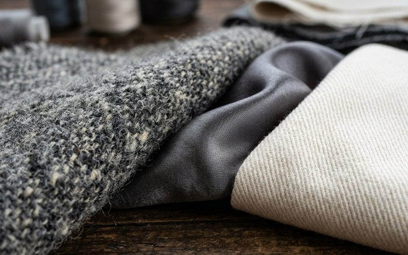

Antes de olhar a etiqueta, antes de ver a marca, existe o toque. A mão sobre o tecido é o primeiro e mais honesto juiz de qualidade. Quem garimpa há tempo desenvolve uma memória tátil que permite avaliar uma peça em segundos: esse tecido tem corpo? Cai com naturalidade? A superfície é uniforme? O brilho é artificial ou natural?
Qualquer pessoa pode desenvolver essa habilidade com prática e atenção. Ela transforma o garimpo de tentativa e erro em algo confiante e intuitivo.
Tecidos de qualidade têm gramatura adequada pro seu tipo. Seda legítima tem leveza, mas não é translúcida como os acetatos sintéticos. Lã boa tem corpo: você sente o peso na mão, e é esse peso que garante que o casaco vai manter a forma. Algodão de boa gramatura tem espessura e opacidade naturais, diferente dos algodões finos que ficam transparentes na primeira lavagem.
Pegue a peça pelos ombros e deixe cair. Ela deve seguir com naturalidade, sem resistência artificial (sinal de entretela barata) e sem perder a forma completamente (sinal de material fino demais).
Tecidos naturais como algodão, linho, seda e lã conduzem temperatura: parecem frescos no primeiro toque porque absorvem o calor das mãos. Sintéticos puros, principalmente poliéster, são mais neutros ou até levemente quentes ao toque. A diferença é sutil mas real, e com prática vira um jeito rápido de identificar a composição do tecido.
Passe os dedos pela superfície com pressão suave. Em tecidos de qualidade, a superfície é uniforme, sem bolinhas (pilling) nem fios soltos. O acabamento das costuras internas também conta: peças bem feitas têm overlock regular, sem fios pendentes, e costuras com tensão consistente. Bainhas feitas à mão, com pontos invisíveis, são sinal de alfaiataria de qualidade.
O toque é uma linguagem que se aprende com o tempo e não se esquece mais. Cada visita ao brechó é uma aula prática: você toca, avalia, compara. Com o tempo, a mão passa a saber antes do cérebro. É quando o garimpo vira realmente seu, um papo direto com os materiais.